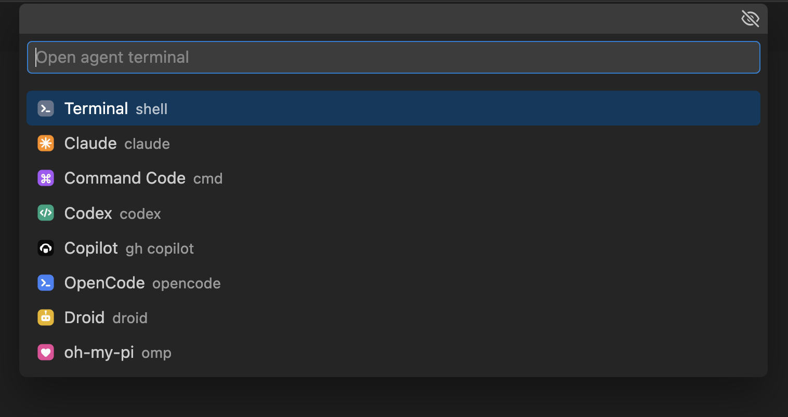
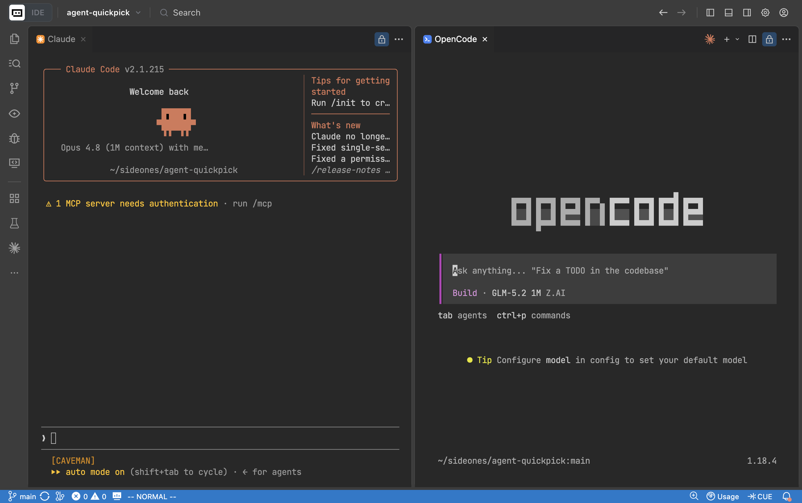

Pick from what you have
It checks your PATH and lists only the agents you've installed. The ones you reach for most climb to the top, and the order follows you across machines with Settings Sync.

Agent Quickpick puts every CLI coding agent one shortcut away, gives each one its own colored tab, and taps you on the shoulder when one needs you.
The picker opens, Claude Code and OpenCode launch into their own tabs, and they run side by side.
It checks your PATH and lists only the agents you've installed. The ones you reach for most climb to the top, and the order follows you across machines with Settings Sync.

A real editor tab with the agent's icon and color, not another anonymous terminal in the bottom panel. Split three side by side and still tell them apart.

Working, idle, blocked, done or error, per agent, in the status bar and the sessions picker. Double-tap the shortcut to jump to any of them, or rename a tab right there.
A native notification, a toast and an optional sound reach you behind other apps and on other Spaces. Show takes you straight to the tab that asked.
Got a script or a wrapper? Give it a name, a command and an icon under agentQuickpick.agents, and it joins the picker.
Install, press the shortcut, pick. Agents you don't have stay out of the way until you click the eye.
No hooks written, no agent config touched. Status reporters ride along with each launch and leave nothing behind.
VS Code, Cursor, Windsurf, Trae, Antigravity and Vodium. Free and MIT licensed.
Install from Open VSX, then press ⌘⇧A. In VS Code, download the .vsix from Open VSX and choose Install from VSIX in the Extensions menu.